輝石龍亞杜拉圖鑑（43 個檔案，GIF 以畫格呈現）
逐圖來源・研究範圍與缺口
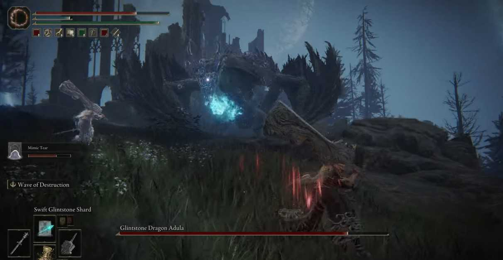
ad-ref-001・外觀
戰鬥全景：深灰藍的巨龍在山崖前，口前一團青藍光爆；背後是月夜廢墟。玩家騎馬在左下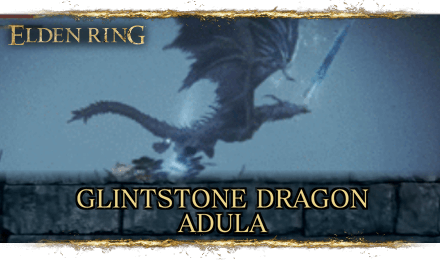
ad-ref-003・外觀
官方標題卡：龍在空中、體側上方斜插一把半透明的冰藍巨劍（月刃起手），低處霧中有青光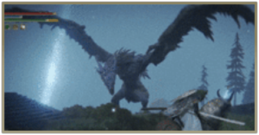
ad-ref-004・外觀
龍低伏、兩翼張開如帶羽毛的破布，翼緣鋸齒狀、背脊一排尖棘；背後一道垂直的藍白光柱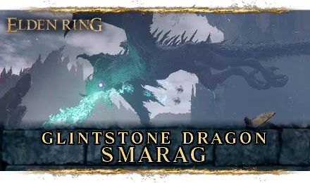
ad-ref-007・同類龍
Smarag 標題卡：同為輝石龍，吐息是青綠色、體型更細長、背脊棘刺更密——只拿來對照亞杜拉偏藍紫、翼更寬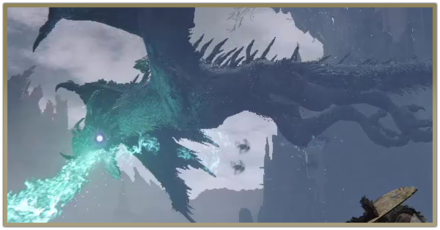
ad-ref-008・同類龍
Smarag 吐息近景，用來對照吐息顏色與嘴部光效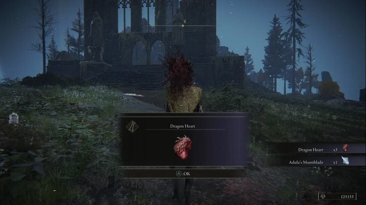
ad-ref-017・掉落
擊倒後在曼努斯・塞列斯大教堂外：掉落 3 顆龍之心與亞杜拉月刃（Adula's Moonblade）；背景是哥德式廢墟尖塔與枯松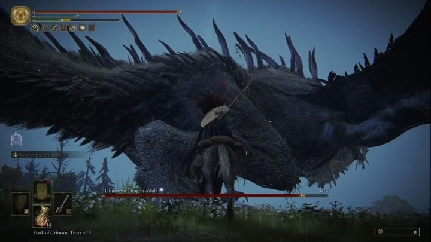
ad-ref-018・外觀
極近的翼：整片深藍黑翼膜，後緣有長長的鋸齒尖刺，玩家與馬相比小得多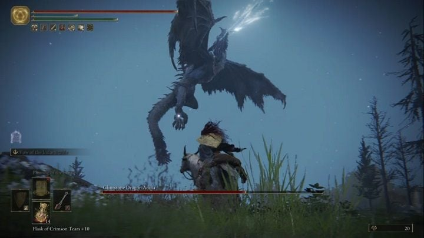
ad-ref-019・招式
龍浮空、前爪垂下，頭頂有碎裂狀的冰藍光屑向上散（準備起飛的結晶光屑）；夜空有星點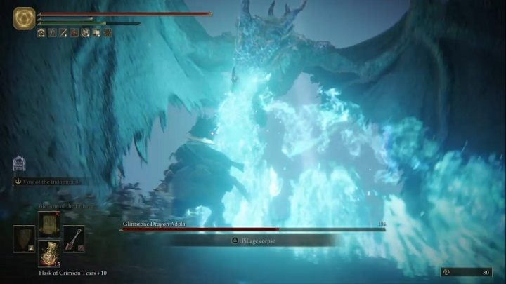
ad-ref-020・招式
輝石吐息正面：青藍色魔法火焰像瀑布般噴向鏡頭，翼膜透出青光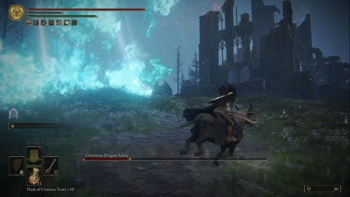
ad-ref-021・招式
吐息橫掃：青色火牆從左掃到右，掃過草地與廢墟，火焰中夾白色光絲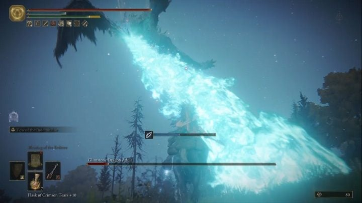
ad-ref-022・招式
空中吐息：一條由高處斜斜打下的長條青色火焰，末端在地面炸開成大片白青色浪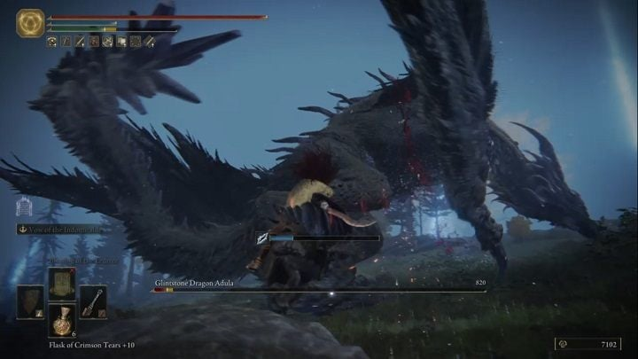
ad-ref-023・外觀
龍貼地低伏的側身：厚實的前臂撐地、翼膜成拱形、背脊棘刺成排，身體偏暗藍紫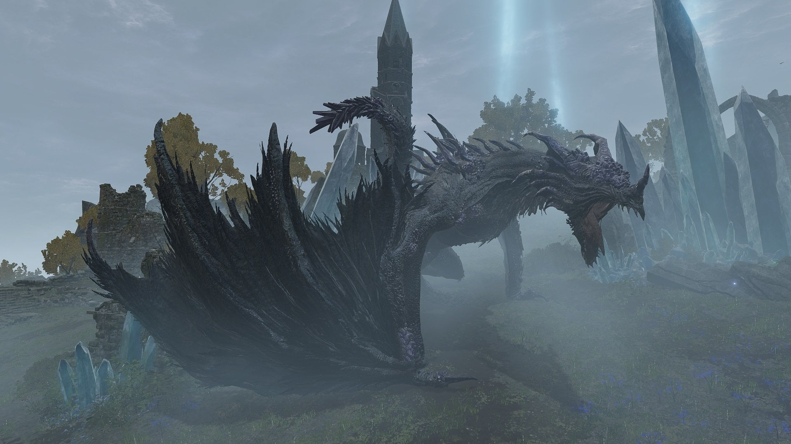
ad-ref-029・外觀
遠景全身側視：龍伏在霧中，周圍冒出藍白色結晶柱，翼收在身後像一堆尖羽毛，頭上有分叉的角冠；天空有月光光柱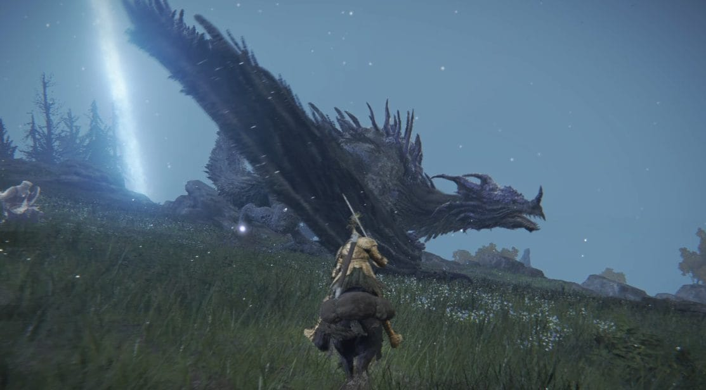
ad-ref-031・外觀
頭頸近景：長頸伸出、頭頂有鹿角般的分叉冠、下顎有鬚棘；翼膜如破羽向後掃，右邊一道月光光柱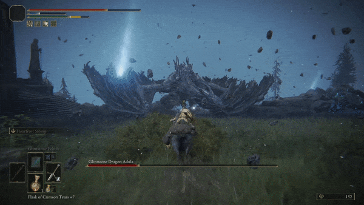
ad-frame-033-20・招式
（GIF「基本打法」20% 處畫格）龍貼地橫陳、翼攤平，碎石飛散，背後光柱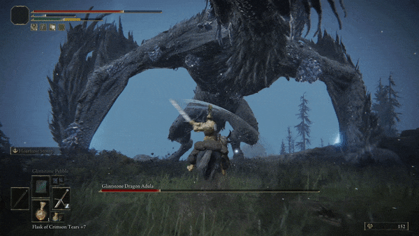
ad-frame-033-40・招式
（GIF「基本打法」40% 處畫格）龍站起，兩翼拱成大圓拱罩住玩家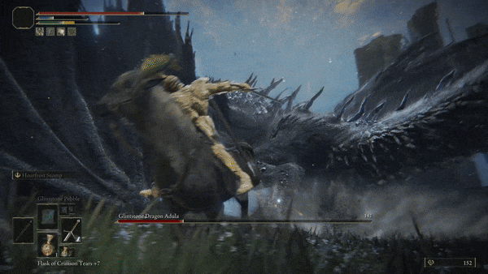
ad-frame-033-60・招式
（GIF「基本打法」60% 處畫格）龍身擦過，煙塵與白色衝擊霧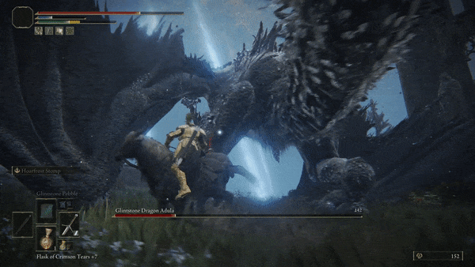
ad-frame-033-80・招式
（GIF「基本打法」80% 處畫格）拱形翼下透出藍白光，近距壓迫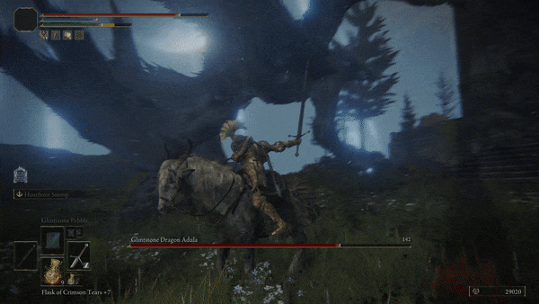
ad-frame-035-20・招式
（GIF「基本打法 2」20% 處畫格）翼拱頂在左上，月光從縫隙漏下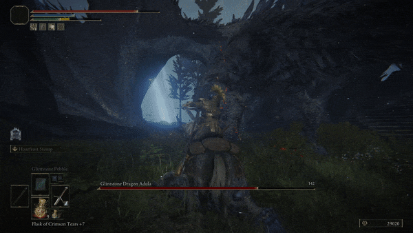
ad-frame-035-40・招式
（GIF「基本打法 2」40% 處畫格）龍腹下的暗部，拱洞透出藍光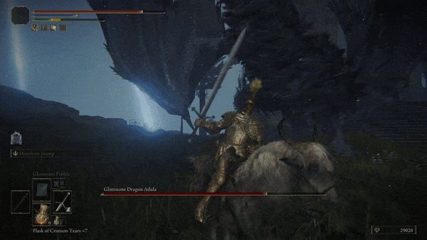
ad-frame-035-60・招式
（GIF「基本打法 2」60% 處畫格）巨大翼膜直立，玩家舉劍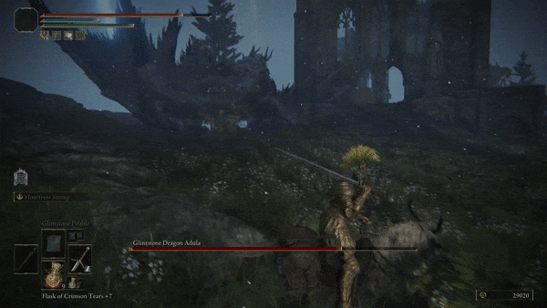
ad-frame-035-80・招式
（GIF「基本打法 2」80% 處畫格）翼上揚，遠處廢墟拱門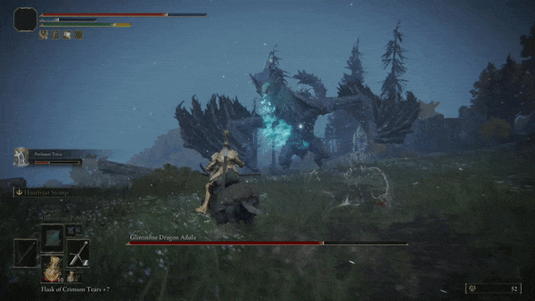
ad-frame-037-20・招式
（GIF「吐息」20% 處畫格）遠景：龍口前有青綠光，身後樹林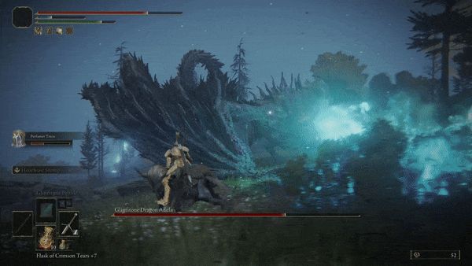
ad-frame-037-40・招式
（GIF「吐息」40% 處畫格）吐息橫掃：大片青綠火雲，翼向兩側張成扇狀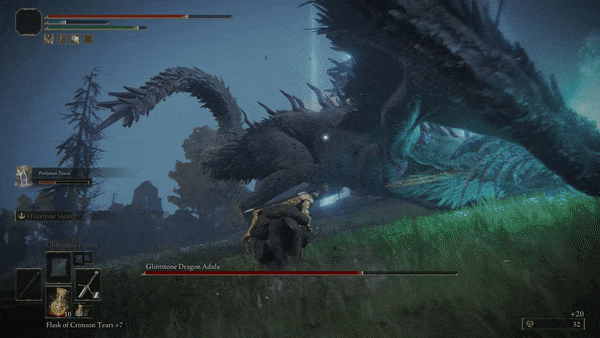
ad-frame-037-60・招式
（GIF「吐息」60% 處畫格）龍頭低壓、尾巴捲起，青火沿地面展開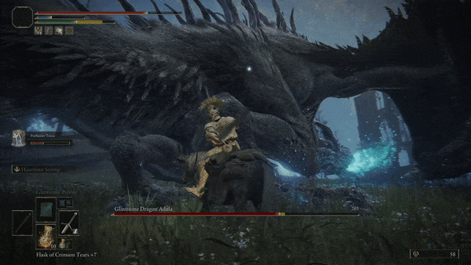
ad-frame-037-80・招式
（GIF「吐息」80% 處畫格）近距：龍首低垂，嘴邊一小簇青光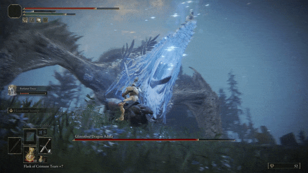
ad-frame-039-20・招式
（GIF「輝石之星（水晶爆）」20% 處畫格）嘴前凝出一大塊冰藍半透明的尖晶簇（輝石之星），閃著白色亮點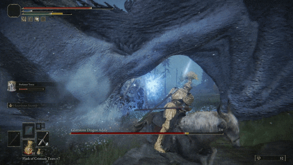
ad-frame-039-40・招式
（GIF「輝石之星（水晶爆）」40% 處畫格）尖晶簇碎裂成藍白霧與光屑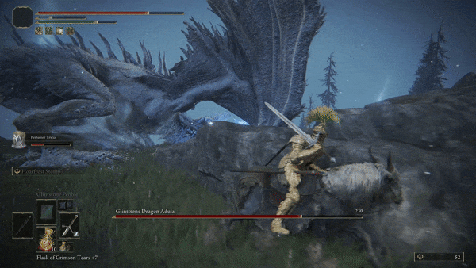
ad-frame-039-60・招式
（GIF「輝石之星（水晶爆）」60% 處畫格）龍落地翼展，殘餘藍光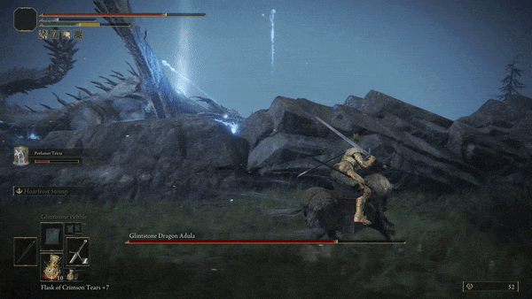
ad-frame-039-80・招式
（GIF「輝石之星（水晶爆）」80% 處畫格）岩堆旁一根斜立的藍白晶刺升起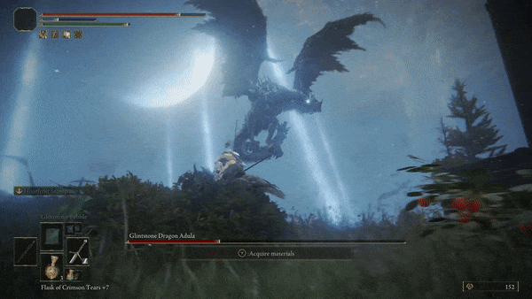
ad-frame-041-20・招式
（GIF「月刃（劍攻擊）」20% 處畫格）龍高飛在新月前，雙翼張開，天上多道光柱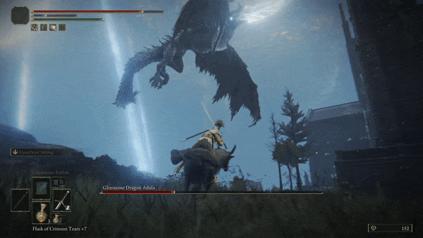
ad-frame-041-40・招式
（GIF「月刃（劍攻擊）」40% 處畫格）龍翻身俯衝，翼收攏、前爪垂下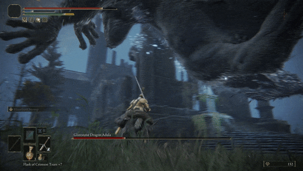
ad-frame-041-60・招式
（GIF「月刃（劍攻擊）」60% 處畫格）龍從頭頂掠過，爪子特寫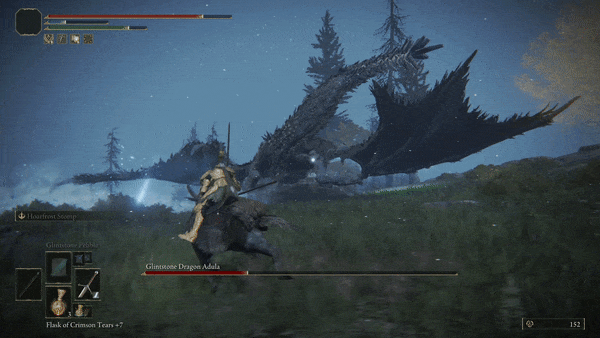
ad-frame-041-80・招式
（GIF「月刃（劍攻擊）」80% 處畫格）龍水平滑翔，雙翼向兩側完全展開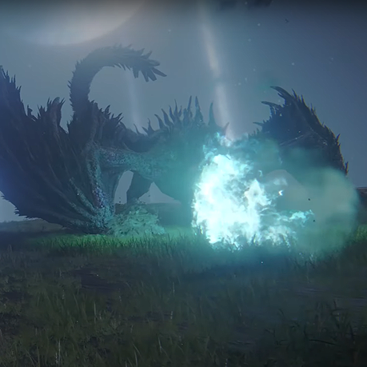
ad-ref-043・招式
吐息起手：嘴前聚成一團白青色的光球，周圍青霧外溢；龍伏在草地、翼膜透著青光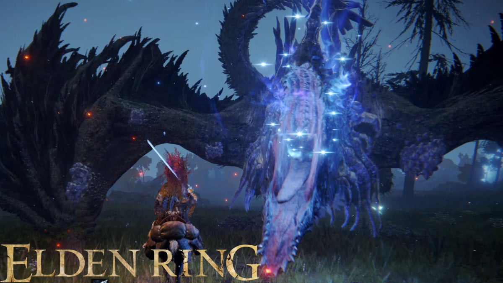
ad-ref-044・招式
官方宣傳圖：龍的頭頸垂直立起，周身浮著許多星狀白光點，頭與頸被藍紫色光暈包住（結晶星光），玩家握劍在下方。疑似月刃或星屑起手，招式名未核實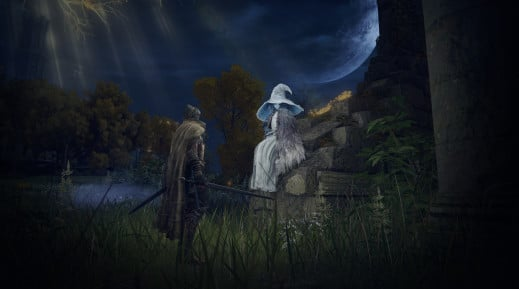
ad-ref-045・場景
蘭妮與玩家在月夜廢墟：滿月、斜射光、藍白長袍的蘭妮坐在石上（亞杜拉效忠蘭妮暗月的背景）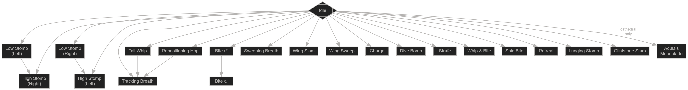
ad-ref-046・招式表
Fextralife 的招式流程圖（文字節點）：低踏左/右→高踏右/左、尾鞭、重整跳、咬（可連咬）、橫掃吐息、翼砸、翼掃、衝撞、俯衝轟炸、側移、尾鞭＋咬、旋咬、撤退、前撲踏、輝石之星，教堂版另有亞杜拉月刃；尾鞭／重整跳後可接追蹤吐息。這是目前最完整的招式清單